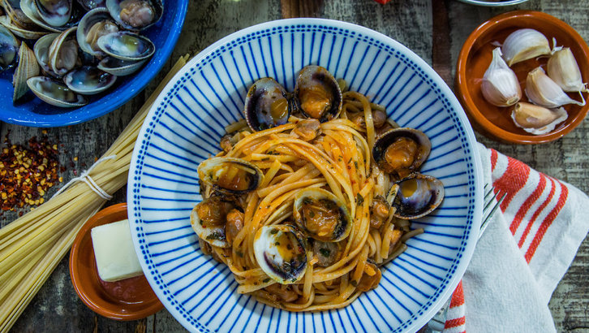
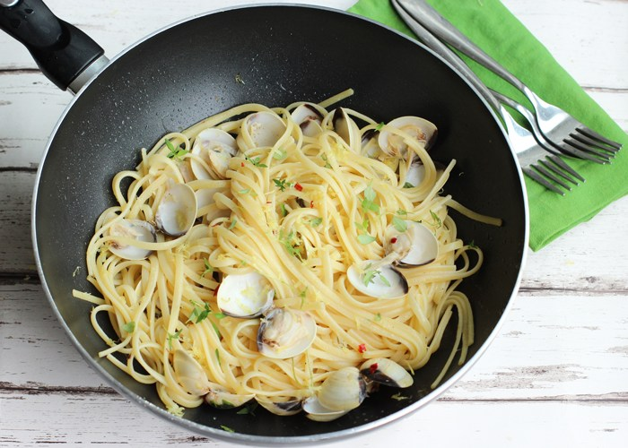

Linguine Vongole
My favorite dish Linguine Vongole is simple and effective. All you would basically need is linguine and clams. Quick and easy boil the pasta and cook clams seperately and some spices and viola

Ingredients
- 150g Dried Linguine
- 2 cloves of garlic
- 1 bunch of fresh flat-leaf parsley
- 500g clams,scrubbed
- olive oil
- 1 pinch of dried red chilli flakes
- 125ml dried white wine
- extra virgin olive oil

Directions
- Cook the pasta in a large pan of boiling salted water according to the packet instructions.
- Meanwhile, peel and finely chop the garlic, then pick and finely chop the parsley (stalks and all).
- Sort through the clams, giving any that aren’t tightly closed a tap. If they don’t close, throw them away.
- When the pasta has 5 minutes to go, heat 1 tablespoon of olive oil in a large frying pan over a high heat, add the garlic and chilli flakes, and fry for 1 minute, or until lightly golden.
- Throw in the clams, give the pan a good a shake, then after 30 seconds add the wine and pop the lid on.
- After 3 or 4 minutes, the clams will start to open – keep shaking the pan until they’ve all opened, then remove from the heat, and discard any clams that remain closed.
- Using tongs, drag the pasta straight into the pan of clams, then simmer for a minute or two in all the delicious juices.
- Taste and adjust the seasoning, if needed, then add the parsley and good drizzle of extra virgin olive oil, and toss together. Delicious served with a glass of chilled white wine.
What I learned

- This is a very flexible dish, you can add your own flair be it chillies, or an addition of muscles or extra garlic the dish can manipulate to please your pallet

- This dish is time effecient and can be prepared in roughly 20 minutes

- Precision is vital much like in coding where one wrong move could impact the outcome.
Enjoy!